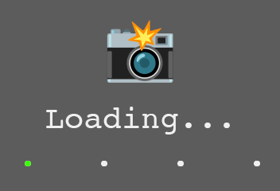

Your nearest camera is ""
Refresh Image
(most update every 2s)
Next Closest Camera
(refresh to go back to beginning)
Find in Google Maps
(close but not always super accurate,
trust the street names more)
I'm ready!
Geolocation Error
You probably have location services turned off on your phone, or don't want to share your location (reasonable tbh). To use the site without GPS, you have two options: